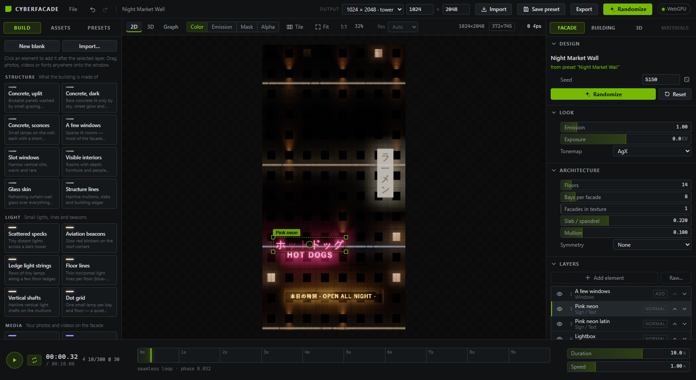
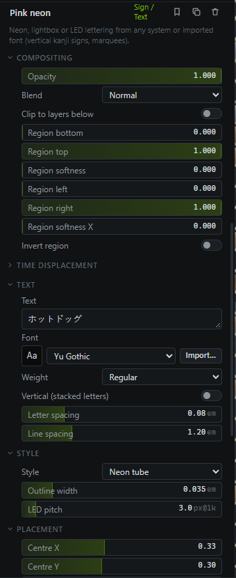
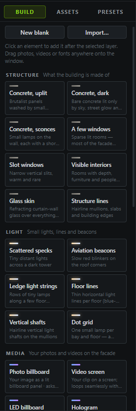
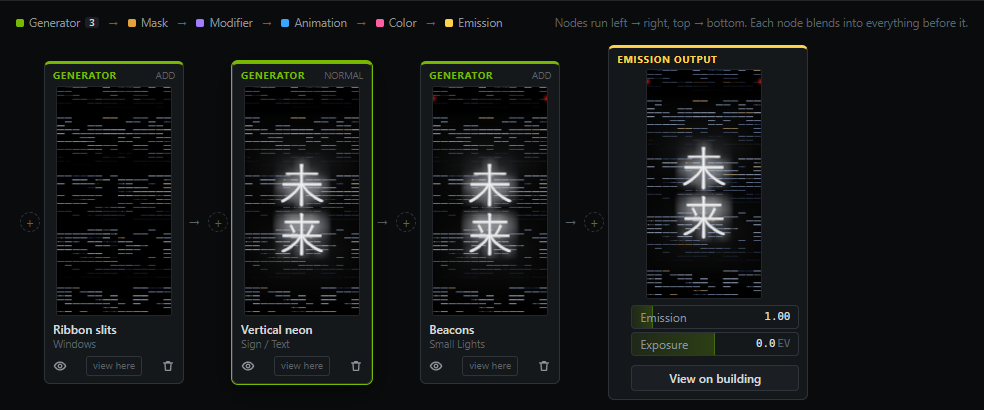
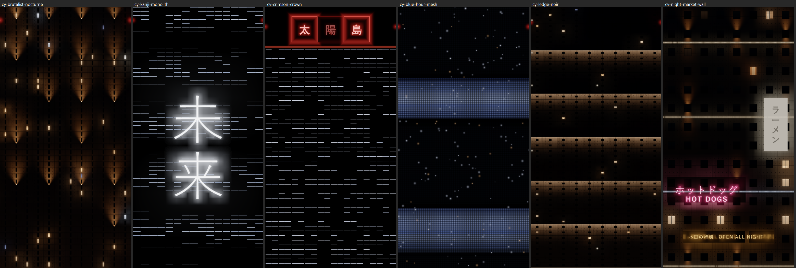
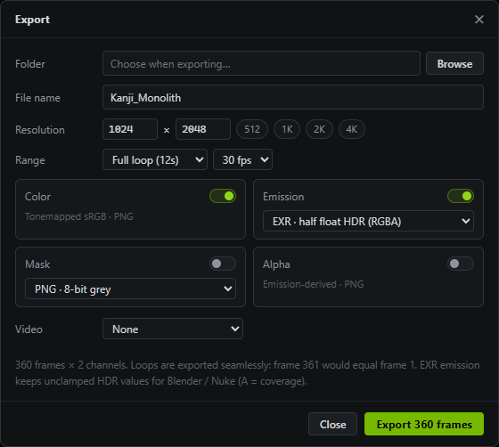

Design animated night-time facades on the GPU: concrete, windows, neon signs, LED skins, your own photos, videos and fonts. Export them as seamless loops for any 3D app, compositor or game engine.
Version 0.1 · Windows · WebGPU
Contents
01What CyberFacade makes
02The window at a glance
03Quick start: your first building from scratch
04How layers work
05The element library
06Layer types in depth
07Importing photos, videos and fonts
08Building, look and animation settings
09Previewing: texture, 3D and Graph
10Presets, Randomize and saving your own work
11Audio reactivity
12Exporting
13Projects and files
14Shortcuts
15Recipes for the minimal cyberpunk look
16Troubleshooting
01What CyberFacade makes
CyberFacade makes emission textures: images of a building's lights at night that you put on a 3D model's emissive channel. A plain box then reads as an inhabited tower of concrete, glass, neon and screens.
Everything animates, and every animation is a seamless loop. The last frame flows straight into the first, so the texture can play forever in Blender, Unreal, Unity, After Effects or a game engine.
How the texture maps onto a building
Left → right runs around the building. With Facades in texture = 4, one texture wraps all four sides, and it tiles seamlessly at the edges.
Bottom → top is the ground floor to the roof.
Every layer snaps to a shared architectural grid of floors and bays. That's why windows, signs, lights and LED meshes line up with each other.
Vocabulary
Term
Meaning
Floor
One storey. Floors sets how many fit into the texture height.
Bay
One window column on a facade. Bays per facade sets how many across.
Slab / spandrel
The solid band between floors, as a fraction of floor height.
Mullion
The vertical divider between bays, as a fraction of bay width.
Layer
One ingredient of the design (concrete, windows, a sign, a video…). Layers stack into the final image.
Element
A ready-made layer from the Build library: a layer type with tasteful settings already dialled in.
Emission
Light energy. It's stored in high dynamic range, so a neon core can be many times brighter than a lit window.
Loop
The animation length (2–15 s). All motion repeats exactly once or a whole number of times per loop.
GPU-first. Every layer is computed on the graphics card; a 1024×2048 frame renders in about 4 ms on an RTX 3060. The preview uses a lighter proxy resolution while you drag sliders and refines itself when you stop.
02The window at a glance

1234567891011121314
The Night Market Wall preset, with the “Pink neon” sign selected.
1
File menu — New blank building, open/save projects, import files, preset files, export.
2
Undo / Redo — every edit, preset load and randomize can be undone.
3
Import · Save preset · Export — bring in files, save the design as your own preset, render images/video.
4
Randomize — a new variation of the current design (respects locks).
Placement handles — drag / resize the selected sign, photo or video.
10
Design · Look · Architecture — name, seed, exposure, tonemap and the building grid.
11
Layers — the stack. Select a layer to edit it below the list.
12
Timeline — play/pause, loop, scrub. Shows the loop phase.
13
Duration · Speed — loop length and global animation speed.
14
Facade panel — design, look, architecture, layers and audio.
03Quick start: your first building from scratch
A ten-minute walk-through: a dark concrete tower with a few lit rooms, a vertical neon sign and roof beacons.
Start blank. Press Ctrl+N (or File ▸ New blank design, or New blank in the Build tab). You get an empty stack on a default 40-floor, 14-bay tower.
Shape the building. In Architecture set Floors and Bays per facade. Taller, narrower grids read as skyscrapers; fewer floors read as street-level buildings. Set Facades in texture to 4 if one texture should wrap the whole building.
Add the material. In Build ▸ Structure click Concrete, uplit. The tower becomes board-formed concrete washed by small warm uplights. Its blend mode is Behind, so it fills whatever the other layers leave empty. It can stay at the bottom of the list.
Add life. Click A few windows (or Slot windows). Only a handful of rooms light up; the rest stay as dark glass in the concrete.
Add a sign. In Signage click Vertical neon. In the layer editor, type your own text in Text, pick a Font, then drag the green handles in the 2D view to place and size it.
Add small lights. Click Aviation beacons for red roof blinkers and Scattered specks for tiny distant lights.
Save it. Press Save preset in the top bar. Your design appears under Presets ▸ My presets.
Export. Press Ctrl+E, choose a folder and enable Emission (EXR) or an MP4 video. See chapter 12.
Taste rule: keep the darks near black. The tonemapper lifts dark values, so an unlit surface at just 1–2 % already reads as grey. Minimal, expensive facades come from a few small, bright things in a lot of darkness.
04How layers work
A design is a stack of layers. The list is processed top to bottom: the first layer is drawn first, and every later layer blends into everything before it.

The layer editor for a Sign / Text layer.
In the layer list
Eye: enable or disable a layer.
▲ ▼: change the order. The badge shows the blend mode.
+ Add element adds a ready-made element after the selected layer. Raw… adds a bare layer type with default settings.
In the layer editor
Click the name to rename the layer.
Bookmark saves the layer to My layers (reuse it in any design from the Build tab).
Copy duplicates it; trash deletes it.
Compositing: opacity, blend mode, clipping and regions (below).
Time displacement: slit-scan offsets (below).
After that come the layer type's own parameter groups.
Sliders
Click or drag anywhere on a bar to set the value.
Shift+drag for fine adjustment; arrow keys nudge.
Click the number to type an exact value.
The lock icon (appears on hover) protects a value from Randomize.
Blend modes
Mode
What it does
Typical use
Normal
Covers what's below where the layer has coverage.
Signs, billboards, windows
Add
Adds its light on top. Nothing gets darker.
Lights, strips, films, holograms
Multiply
Darkens the result below by the layer.
Noise used as a dimming mask
Screen
Soft brightening without clipping.
Gentle glows
Max
Keeps the brighter of the two.
Overlapping light sources
Mask
Keeps what's below only where this layer has coverage.
Cut a film to the window shapes
Replace
Replaces everything below.
Modifiers like Glass, LED Mesh, Distortion
Subtract
Removes light.
Carving dark patterns
Behind new
Draws underneath everything already there, filling only empty areas.
Concrete: the building material under all its lights
Compositing controls
Opacity fades the layer in or out.
Clip to layers below restricts the layer to what already exists, e.g. glass only over the windows.
Region bottom / top and Region left / right limit the layer to a rectangle of the building, with soft edges. Invert region flips it: “everything except the central spine”.
Time displacement offsets the layer's animation per floor or per bay. Upper floors run ahead or behind in time (slit-scan). Step per floor / bay makes each floor a clean step. Loops stay seamless.
Tip. In Graph mode, view here on a node shows the stack only up to that layer. It's a fast way to understand or debug a complex design.
05The element library

Build tab. Click a tile to add that element after the selected layer.
Elements are the building blocks for designing from scratch. Each one is a layer type with good settings already dialled in. Everything stays fully editable afterwards.
Elements marked asks for a file open a file picker first. The photo or video you choose goes straight onto the new layer.
My layers appears at the top of the Build tab once you've saved a layer with the bookmark icon. It's your personal element library.
Category
Elements
For
Structure
Concrete (uplit, dark, sconces) · A few windows · Slot windows · Visible interiors · Glass skin · Structure lines
A brutalist surface with its night lighting baked in. Put it anywhere in the stack (usually last). It fills only what signs, windows and screens leave empty, and it is lit by them.
Surface
Concrete colour and panel tone variation.
Panels per bay / floor, joint width and shadow.
Tie holes, board-form grain, rain stains, floor ledges.
Ambient
Sky light and City glow (warm light from the street, stronger on low floors).
Spill from signs: light from everything listed before this layer washing onto the concrete. Spill radius sets how far it travels.
Fixtures
Types: uplights, downlights, up + down, small sconces or ledge washers.
Placement: every N bays / floors, height within the floor.
Light: beam spread, reach (in floors), colour temperature, intensity.
Fixtures lit for gaps, Faulty fixtures that flicker, and Lamp size for the visible lamp point.
Sign / Text
Text
Multi-line text in any font: system fonts such as Yu Gothic, Meiryo or Bahnschrift, an imported font, or “Other installed font…”.
Weight, letter and line spacing.
Vertical stacks letters top to bottom, CJK style; extra lines become columns running right to left.
Style
Neon tube: hot white core and glow. Light and thin weights look most like real tubes.
Neon outline: a tube traced around each letter; set its width with Outline width.
Lit letters, Lightbox (glowing panel, dark letters), and LED dot letters (set the dot spacing with LED pitch).
Placement: centre X / Y and letter size. Easiest with the drag handles in 2D.
Light: colour, intensity, hot core, glow and glow radius. Unlit tube keeps a faint glass trace of letters that are switched off.
Faulty flicker: some letters misbehave; Faulty letters sets how many.
Letter sequence, Type on / off, Breathe, Scroll (marquee).
Image / Video
Source: an imported file, or Layers below (in place), which applies the display treatment to whatever is underneath. For example, turn a film into an LED panel.
Placement
Fit: keep proportions, fill (crop), stretch, or tile.
Centre, width and height; Snap to bays & floors.
Scroll: whole numbers loop seamlessly.
Display
Direct billboard, LED dots, LED lines.
Window pixels: the whole facade as a screen, one pixel per window.
Hologram: scanlines, flicker, glitch slices, colour split; best with the Add blend and Backing panel 0.
Colour
Brightness, contrast, saturation, hue shift.
Black cut crushes greys to true black; use it to avoid flat grey panels.
Monochrome tint or Duotone for a restrained palette.
Frame: backing panel (0 = the picture adds light, no panel); frame light, colour and width.
Video
Speed and start offset.
Loop timing: Seamless (whole repeats) is the default and adjusts speed slightly so the clip fits the loop exactly. Stretch clip to loop plays the clip exactly once per loop. Native speed doesn't adjust, so the loop may jump.
Small Lights
Types: Scattered specks (tiny random lights), Aviation beacons (synchronised red blink on the roof corners), Light strings (rows of lamps along ledges or mullions) and Dot grid (a lamp at a fixed spot every N bays/floors). You control density, size, two colours, brightness variation, halo, twinkle and rate.
LED Mesh
Re-displays everything below it through a grid of diodes, the fine dot skin of media towers.
Grid: Free pitch, or Aligned to bays & floors (diodes per bay / floor).
Diodes: round, square or bar shape; size; staggered rows.
Signal: gain, threshold (dark diodes stay off), brightness steps for a retro look, and faintly visible unlit diodes.
Put a film, gradient or strips before it in the list. The mesh turns them into light.
The other layer types
Layer
What it does
Windows
Occupancy, clustering, warm/cool light, ceiling or lamp-lit rooms, office fixtures, blinds, curtains, silhouettes, TV flicker, faulty tubes. Unlit windows stay as dark glass.
Interiors
Real 3D rooms behind every window, seen in perspective: ceilings, furniture, art, walking people. Back walls can be screens showing the layers below.
Glass
Per-pane refraction, slow warp, dispersion, tint, edge shading and reflection streaks over everything below.
LED Strips
Linear lights on floors or bays: continuous, broken at mullions or as LED pixels. Chase, wave, cascade, pulse, sparkle, scan.
Grid
Structural hairlines: mullions, slabs, building edges, nodes, traces.
Modifiers for everything below: power flicker, grading, posterize, glow, and warp / glitch / liquid / shear / pixelate / RGB split.
07Importing photos, videos and fonts
Your own material makes a facade yours. There are three ways to bring it in:
Drag and drop files anywhere onto the window.
The Import button in the top bar, or File ▸ Import photo / video / font.
The Import… button next to any file or font parameter.
Kind
Formats
What happens
Photo
PNG, JPG, WebP, GIF, BMP, AVIF
Into an empty design: a Facade photo filling the texture, with Photo Lights on top (see below). Otherwise a new Photo billboard layer. PNG transparency is respected.
Video
MP4 (H.264), WebM (VP9)
A new Video screen layer. The clip plays in the preview and is seeked frame-exactly on export.
Font
TTF, OTF, WOFF, WOFF2
Applied to the selected Sign layer, or a new sign is created in that font.
The Assets tab
Every imported file lands in the app's library and stays there between sessions.
Click an asset to use it again: photos and videos become a new layer, fonts go on the selected sign.
The trash icon removes an asset; layers that use it go blank.
Importing the same file twice is detected, so it is only stored once.
Placing media and signs
Select an Image / Video or Sign layer while in 2D. A green frame with handles appears:
Drag an edge or the centre circle to move.
Drag a corner to resize. It resizes proportionally for signs and for Keep proportions media; for fill, stretch and tile it changes width and height separately.
Zooming and panning still work everywhere inside the frame.
Bringing a night photo to life: Photo Lights
Drop a night photo of a building into an empty design (or use Build ▸ Media ▸ Facade photo). The photo fills the texture, the output takes its proportions, and a Photo Lights layer makes every lit window and lamp in it live on its own: rooms switch off and on, tubes flicker, TVs glow blue. On any Image / Video layer, ✦ Animate the lights in this picture adds the same layer.
Show detected lights colours each light it found. Every window should be one solid colour. If windows split into pieces, raise Light size; if neighbours merge, lower it.
Sensitivity: a light is anything clearly brighter than its surroundings, so it works for dark and bright photos alike. Raise it to include dim rooms.
Behaviour: Mixed gives a realistic night (mostly steady, some rooms switching, a little flicker, the odd TV). Animated share, Switching rate, Time off and Light left when off set how busy and how dark it gets.
Everything loops seamlessly, and Randomize / a new seed picks different rooms.
Tip. For holograms, use high-contrast images on a black background. Set Black cut to about 0.1 and use a Monochrome tint, so only the subject glows.
08Building, look and animation settings
Design
Type a name for the design.
Seed drives all randomness: which windows are lit, where specks sit, and so on. The dice button picks a new seed; the same seed always reproduces the same design.
Randomize makes a variation that stays close to the original preset (locked values are kept). Reset returns to the preset's original values.
Look
Emission multiplies all light in the output.
Exposure affects only the preview and the Color export.
Tonemap sets how HDR light becomes screen colour: AgX (default, filmic), AgX Punchy, ACES, Linear (clamp).
Architecture
Floors, bays per facade, facades in texture, slab / spandrel and mullion.
Symmetry: None, Mirror in facade, Identical facades or Mirror + identical.
Every grid-aware layer follows these values.
Output size
Set the texture resolution in the top bar: presets like 1024 × 2048 · tower, 4096 × 1024 · wrap, or custom width × height. Tall ratios suit towers; wide ratios suit wrap-around textures with 4 facades.
Animation
Duration (2–15 s) is the loop length. Speed scales every animation.
Rates are rounded to whole cycles per loop, so the loop is always perfectly seamless. Very slow rates settle at exactly one cycle per loop.
The timeline shows the current time, frame and loop phase. Drag it to scrub.
09Previewing: texture, 3D and Graph
Texture
Navigation: wheel to zoom, drag to pan, double-click to fit. 1:1 shows real pixels.
Tile repeats the texture sideways to check the seamless wrap.
Channels: Color (final look), Emission (HDR heat map from −6 to +6 EV, to spot overexposure), Mask (coverage), Alpha.
Res limits the preview resolution (Auto, ≤512 … Full res). The top-right readout shows output size, render size and fps.
3D
A preview of the texture on a building, to judge scale and mood. It only looks: nothing you do in 3D changes the design.
Building shapes: Cube, Skyscraper, Rectangular, Stepped, Cylindrical.
Camera: drag to orbit, right-drag (or Shift-drag) to move along the height, wheel to zoom, double-click to reset. Orbit toggles auto-rotation.
Scene…: building skin (Auto picks matte when the design has Concrete), blue-hour or deep-night sky, bloom, wet reflections, fog, lit haze, rain, environment, exposure, field of view, and Match texture proportions.
Graph (advanced)

Graph mode: each layer is a node with a live thumbnail, ending in the Emission output.
Click a node to edit it; drag nodes to reorder.
+ inserts a node at that point.
The eye bypasses a node. view here previews the result up to that node.
View texture returns to the texture view.
10Presets, Randomize and saving your own work

The Noir Brutalist presets: Brutalist Nocturne, Kanji Monolith, Crimson Crown, Blue Hour Mesh, Ledge Noir, Night Market Wall.
The Presets tab opens on My presets. Use the dropdown for all 46 built-in presets, favourites, recent ones or a category. Search matches names, tags and descriptions.
Click a preset to load it. It is a normal, fully editable layer stack, so treat presets as starting points or references.
The star adds a preset to your favourites; the trash deletes one of your own presets.
Save preset (top bar) stores the current design: all layers, seed, building, animation and look. If the design came from one of your presets you can overwrite it or save a new one.
My layers: the bookmark icon in the layer editor saves a single layer, such as your perfect neon sign or concrete mix, for reuse in any future design.
File ▸ Export preset file… writes a .facadepreset to share. Imported photos, videos and fonts are embedded, so it works on another PC. Import preset file… loads one.
Randomize with locks. Hover a slider and click its lock to keep that value while randomizing everything else. The architecture (floors, bays) and the seed can be locked too.
11Audio reactivity
Open the Audio reactivity section at the bottom of the right panel.
Load a source. Load a music file (it plays with the timeline), or use the microphone.
Add a route. Connect a band (Bass, Mid, High or Level) to any numeric parameter of any layer, or to the global emission.
Set the Amount. From −1 to +1: how much of the parameter's range the band pushes; negative inverts. Example: Bass → a sign's Intensity makes neon pulse to the kick drum.
Audio files are analysed ahead of time, so exports with audio routes are deterministic and match the music frame by frame.
12Exporting

Export dialog (Ctrl+E).
Folder, file name, resolution: chips set 512 / 1K / 2K / 4K on the long side, keeping proportions.
Range: the full loop at 24–60 fps, or a single still at the playhead.
Color: tonemapped PNG, exactly what you see.
Emission: EXR half float keeps full HDR for 3D renderers (recommended); a PNG option also exists.
Mask: coverage as PNG or EXR. Alpha: an emission-derived PNG.
Video: MP4 (H.264, hardware encoder) or WebM (VP9), with a bitrate.
Image sequences are written to one subfolder per channel, e.g. Name_emission/Name_emission_0001.exr. The loop is seamless: the frame after the last would equal frame 1.
In Blender: use the EXR sequence as an Image Texture (Image Sequence, auto refresh, cyclic) plugged into the Emission input. Set the Emission strength to 1–5 and let bloom or compositing do the rest. The UV layout matches the texture: U wraps around the building, V goes from the ground to the roof.
13Projects and files
Save project (Ctrl+S) writes a .facade file with the whole document, the preset it came from and your locks. Ctrl+Shift+S saves as a new file; Ctrl+O opens one.
Imported photos, videos and fonts used by the project are copied into a <project>_assets folder next to the project file. Keep them together when moving the project to another PC.
Older projects and presets always open. Missing parameters take their defaults.
14Shortcuts
Keys
Action
Space
Play / pause
R
Randomize
Ctrl+Z
Undo
Ctrl+Y / Ctrl+Shift+Z
Redo
Ctrl+N
New blank building
Ctrl+O
Open project
Ctrl+S / Ctrl+Shift+S
Save / Save as
Ctrl+E
Export
Mouse
Action
2D wheel
Zoom at cursor
2D drag
Pan
2D double-click
Fit
Slider + Shift
Fine adjustment
15Recipes for the minimal cyberpunk look
Blade Runner cities aren't glossy everywhere. They're mostly dark mass: concrete with small, deliberate lights, a few windows and one or two strong graphic moments. Start each recipe from Ctrl+N.
Change that layer's display to Hologram, blend Add, backing panel 0, monochrome tint #7fc4ff.
Rules of taste
Dark first. Most of the facade should be near black. Unlit things at 1 % already look grey after tonemapping.
One hero. One big sign, hologram or mesh per building. Everything else stays small: specks, beacons, sconces.
Few colours. Pick one accent (pink, red or ice-blue) on top of warm white and cool white.
Slow motion. Rates around 0.05–0.2 Hz feel expensive. Fast flicker belongs on one faulty letter, not on everything.
Let light land. Signs and screens should spill onto concrete. That's what makes them feel physically present.
16Troubleshooting
Problem
Fix
Everything looks grey or washed out
Lower intensities, raise Black cut on media, keep unlit levels near 0. Check the Emission channel for overexposed areas.
A video won't import
Use H.264 MP4 or VP9 WebM. Re-encode HEVC / ProRes files first.
A video loop jumps
Set Loop timing to Seamless (whole repeats) or Stretch clip to loop.
A font shows boxes instead of kanji
The font has no Japanese or Chinese glyphs. Pick Yu Gothic, Meiryo or MS Gothic, or import a CJK font.
Concrete doesn't show
Its blend must be Behind, and some layer before it may cover everything (films with full coverage). Put films inside regions, or use Add blend on them.
A film layer looks black
Noise defaults to Multiply. Switch it to Add when it should emit light.
A panel shows “hit an error”
Press Retry. The rest of the app, including the GPU preview, keeps working.
Preview feels slow at 4K
Set Res to Auto or ≤1024 while designing. Export always renders at full resolution.
CyberFacade · Tauri · React · WebGPU / WGSL. All generation, compositing and export conversion run on the GPU.